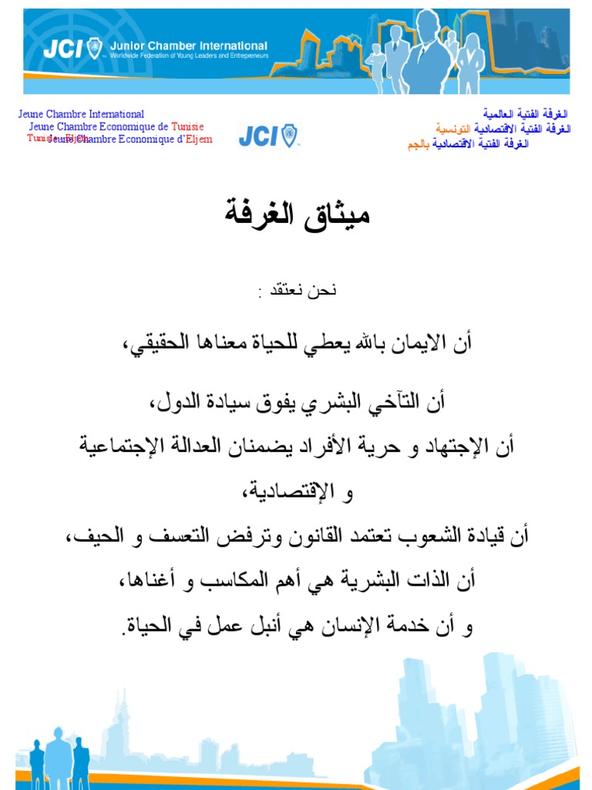
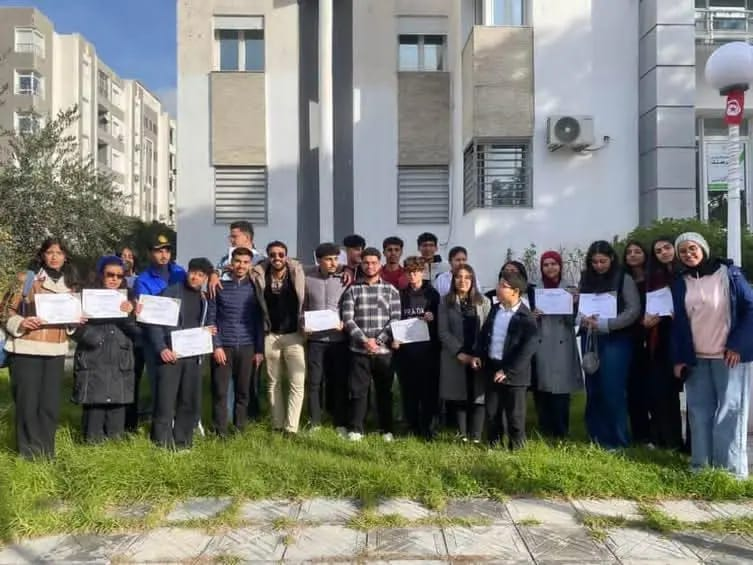

Donner aux jeunes leaders âgés de 18 à 40 ans les moyens de créer un changement positif et durable dans leurs communautés et au-delà.
La Jeune Chambre Internationale (JCI) est une organisation internationale non gouvernementale à but non lucratif, dédiée au développement des jeunes leaders âgés de 18 à 40 ans. Elle vise à créer des changements positifs et durables à travers l'action citoyenne, le leadership et l'entrepreneuriat.
Présente dans plus de 120 pays et regroupant près de 200 000 membres actifs répartis dans quelque 5 000 communautés, la JCI est aujourd'hui le principal réseau mondial de jeunes citoyens engagés.
La JCI El Fahes est la branche locale affiliée à la JCI Tunisie, œuvrant pour l'autonomisation des jeunes de la région à travers des formations, des projets citoyens et des initiatives locales.
Mission
Offrir aux jeunes des opportunités de développement du leadership et de l'esprit entrepreneurial afin de leur donner la capacité de créer des changements positifs.
Vision
Être le premier réseau mondial de jeunes leaders actifs et responsables.
« Servir l'humanité constitue l'œuvre la plus noble d'une vie. » — Credo de la JCI
Des États-Unis jusqu'à la Tunisie, la JCI a forgé au fil des décennies un héritage de formation citoyenne et d'engagement.
Des formations concrètes et des projets à fort impact pour développer les compétences des jeunes de la région.
Formations et ateliers pour développer vos capacités de leader et de gestion de projets.
Encadrement pour les jeunes porteurs de projets et idées innovantes.
Réalisation de projets sociaux visant à améliorer la qualité de vie dans la communauté locale.
Les valeurs fondatrices qui guident chaque membre de la JCI, en Tunisie comme partout dans le monde.
Vous souhaitez intégrer la JCI El Fahes ou en savoir plus sur nos activités ? Contactez-nous !
Quelques instants forts partagés au sein de la JCI El Fahes.

